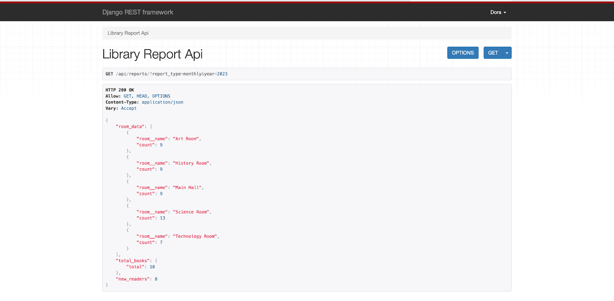

Описание работы всех используемых endpoint-ов
Регистрация
Для начала надо зарегистрировать нашего библиотакаря. Для этого нам надо получить токен админа: 1) Работа происходит через Django shell
python manage.py shell
2) Смотрим кто сейчас админ
from django.contrib.auth.models import User
admins = User.objects.filter(is_superuser=True)
for admin in admins:
print(admin.username)
3) Назначим токен админу
python manage.py drf_create_token Dora
4) Я получила сообщение с токеном
Generated token 7a239e6c01c77adad2dae14de9a4c87d85fdb3bb for user Dora
Описание работы endpoint-ов
Эндпоинты для книг
-
Получение списка книг или добавление новой книги:
- GET и POST: http://127.0.0.1:8000/api/books/
GET (получение списка книг): Запрос
GET /api/books/возвращает список всех книг в библиотеке с их деталями, включая название, авторов, издательство, год публикации, раздел и статус списания.POST (создание книги): Запрос
POST /api/books/используется для добавления новой книги в библиотеку. В теле запроса передаются данные о книге в формате JSON, включая название, авторов, издательство, год публикации, раздел, шифр и статус списания.- GET (по id): http://127.0.0.1:8000/api/books/
GET (получение информации для книги по id):
- PATCH (обновление по id): http://127.0.0.1:8000/api/books/
PATCH (обновление информации для книги по id): Запрос
PATCH /api/books/11/используется для частичного обновления информации о книге с ID 11. В данном случае пример показывает изменение поляis_discardedнаtrue, чтобы пометить книгу как списанную.- DELETE (удаление по id): http://127.0.0.1:8000/api/books/
DELETE (удаление по id):
-
Получение списка просроченных книг (выданных более месяца назад):
- GET: http://127.0.0.1:8000/api/books/late/
Запрос
GET /api/books/late/возвращает список книг, которые просрочены (выданы более месяца назад). Ответ содержит информацию о транзакциях, включая дату выдачи, тип транзакции, срок возврата, статус возврата, ID книги и читателя. -
Перенос экземпляра книги в другой зал:
-
POST: http://127.0.0.1:8000/api/books/
/transfer/ используется для переноса экземпляра книги в другой читальный зал. В теле запроса указывается room_id, чтобы задать новый зал, к которому будет прикреплена книга. -
Добавление и удаление экземпляров книги:
-
POST и DELETE: http://127.0.0.1:8000/api/books/
POST (добавление экземпляров книги): Запрос
POST /api/books/<book_id>/manage_copies/добавляет экземпляры книги в указанный зал, принимаяquantityиroom_idв теле запроса.DELETE (удаление экземпляров книги): DELETE удаляет определенное количество экземпляров из указанного зала. - Обновление шифра книги:
- PATCH: http://127.0.0.1:8000/api/books/
PATCH /api/books/<book_id>/update_code/используется для обновления шифра книги. В теле запроса передается новый код, который заменяет текущий.
- GET: http://127.0.0.1:8000/api/books/late/
Запрос
-
Получение списка книг с количеством экземпляров <= 2:
- GET: http://127.0.0.1:8000/api/books/low_stock/
Эндпоинт
GET /api/books/low_stock/возвращает список книг с количеством экземпляров, равным или меньшим двум, вместе с информацией о книгах и связанных читателях.
- GET: http://127.0.0.1:8000/api/books/low_stock/
Эндпоинт
Эндпоинты для читателей
-
Получение списка читателей или добавление нового читателя:
- GET и POST: http://127.0.0.1:8000/api/readers/
GET (получение списка читателей): Эндпоинт
GET /api/readers/возвращает список читателей библиотеки с информацией о каждом из них, включая номер читательского билета, полное имя, паспортные данные, дату рождения, адрес, уровень образования и привязанный читальный зал.POST (добавление нового читателя): Эндпоинт
POST /api/readers/используется для добавления нового читателя. В теле запроса передаются данные читателя, такие как номер билета, имя, паспортные данные, дата рождения, адрес, номер телефона, уровень образования и другие детали. -
Получение списка книг, закрепленных за конкретным читателем:
- GET: http://127.0.0.1:8000/api/readers/
GET /api/readers/<reader_id>/books/возвращает список книг, закрепленных за конкретным читателем, включая информацию о транзакциях, таких как дата выдачи, срок возврата и статус возврата.
- GET: http://127.0.0.1:8000/api/readers/
-
Удаление читателей, которые не перерегистрировались в течение года:
- DELETE: http://127.0.0.1:8000/api/readers/remove_old/ Эндпоинт DELETE /api/readers/remove_old/ удаляет читателей, которые не перерегистрировались в течение года.
-
Перемещение читателя в другой зал:
- POST: http://127.0.0.1:8000/api/readers/
POST /api/readers/<reader_id>/transfer/используется для переноса читателя в другой читальный зал. В теле запроса передаетсяroom_id, указывающий новый зал, к которому будет прикреплен читатель.
- POST: http://127.0.0.1:8000/api/readers/
-
Обновление номера читательского билета:
- PATCH: http://127.0.0.1:8000/api/readers/
PATCH /api/readers/<reader_id>/update_ticket/используется для обновления номера читательского билета. В теле запроса передается новый номер билета через параметрnew_ticket_number.
- PATCH: http://127.0.0.1:8000/api/readers/
Эндпоинты для читальных залов
-
Получение списка читальных залов и создание нового:
- POST и GET: http://127.0.0.1:8000/api/reading_rooms/
GET (получение списка читальных залов): Эндпоинт
GET /api/reading_rooms/возвращает список всех читальных залов с их характеристиками, включая идентификатор, номер, название и вместимость каждого зала.POST (создание нового читательного зала):
 Эндпоинт
Эндпоинт POST /api/reading_rooms/используется для создания нового читального зала. В теле запроса указываются данные о зале, такие как номер, название и вместимость. -
Получение списка читателей, прикрепленных к залу:
- GET: http://127.0.0.1:8000/api/reading_rooms/
GET /api/reading_rooms/<room_id>/readers/возвращает список читателей, прикрепленных к указанному читальному залу, включая их данные, такие как номер билета, имя, адрес, уровень образования и другую информацию.
- GET: http://127.0.0.1:8000/api/reading_rooms/
Эндпоинты для транзакций с книгами
-
Получение списка транзакций с книгами и добавление новой транзакции:
- GET и POST: http://127.0.0.1:8000/api/book_transactions/
GET (получение списка транзакций с книгами): Эндпоинт
GET /api/book_transactions/возвращает список всех транзакций с книгами, включая информацию о дате транзакции, типе операции (выдача или возврат), сроке возврата, статусе возврата, а также ID книги и читателя.POST (добавление новой транзакции): Эндпоинт
POST /api/book_transactions/используется для создания новой транзакции с книгой. В теле запроса указываются данные о транзакции: дата, тип (например, выдача), срок возврата, статус возврата, а также ID книги и читателя.-
GET (получение информации o транзакции по id): http://127.0.0.1:8000/api/book_transactions/
GET /api/book_transactions/<transaction_id>/возвращает подробную информацию о конкретной транзакции с книгой, включая дату транзакции, тип (например, выдача), срок возврата, статус возврата, а также ID книги и читателя. -
PATCH (отметка возврата книги по id): http://127.0.0.1:8000/api/book_transactions/
PATCH /api/book_transactions/<transaction_id>/используется для обновления статуса возврата книги. В теле запроса передается обновленное значение поляreturned, например,true, чтобы отметить, что книга была возвращена.
Эндпоинты для отчетов
-
Получение отчета о работе библиотеки:
-
GET: http://127.0.0.1:8000/api/reports/

-
GET (ежемесячный отчет за конкретный месяц и год): http://127.0.0.1:8000/api/reports/?report_type=monthly&year=2023&month=10 Эндпоинт
GET /api/reports/?report_type=monthly&year=2023&month=10предоставляет ежемесячный отчет о библиотеке за октябрь 2023 года. В ответе указываются данные о залах, общее количество книг и число новых читателей за указанный период. -
GET (ежемесячный отчет за весь год): http://127.0.0.1:8000/api/reports/?report_type=monthly&year=2023  Эндпоинт
GET /api/reports/?report_type=monthly&year=2023возвращает ежемесячный отчет за 2023 год. В ответе отображается информация о залах (названия и количество мероприятий), общем числе книг и количестве новых читателей в течение года. -
GET (отчет со статистикой читателей (образование, возраст)): http://127.0.0.1:8000/api/reports/?report_type=reader_statistics Эндпоинт
GET /api/reports/?report_type=reader_statisticsпредоставляет статистику читателей. Ответ включает количество читателей младше 20 лет и процентное распределение уровней образования: бакалавриат (44.44%), средняя школа (22.22%), магистратура (22.22%) и докторантура (11.11%). -
GET (получение расширенного отчета о состоянии библиотеки): http://127.0.0.1:8000/api/reports/complex/
-
GET (сводный отчёт за конкретный месяц и год): http://127.0.0.1:8000/api/reports/complex/?report_type=summary&year=2023&month=10 Эндпоинт
GET /api/reports/complex/?report_type=summary&year=2023&month=10предоставляет обобщенную статистику за октябрь 2023 года. Ответ включает данные о читателях младше 20 лет, процентное распределение уровней образования, общее количество книг и читателей, а также сведения о заполненности читальных залов. -
GET (сводный отчет за весь год): http://127.0.0.1:8000/api/reports/complex/?report_type=summary&year=2023 Эндпоинт
GET /api/reports/complex/?report_type=summary&year=2023возвращает комплексный отчет за указанный год. Данные включают количество читателей младше 20 лет, статистику уровней образования, общее количество книг и читателей, а также данные о читальных залах.report_type=summary— указывает, что требуется сводный отчёт.
-